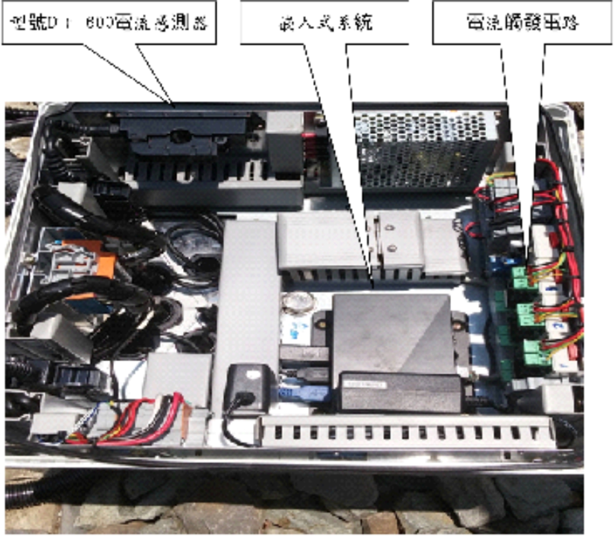
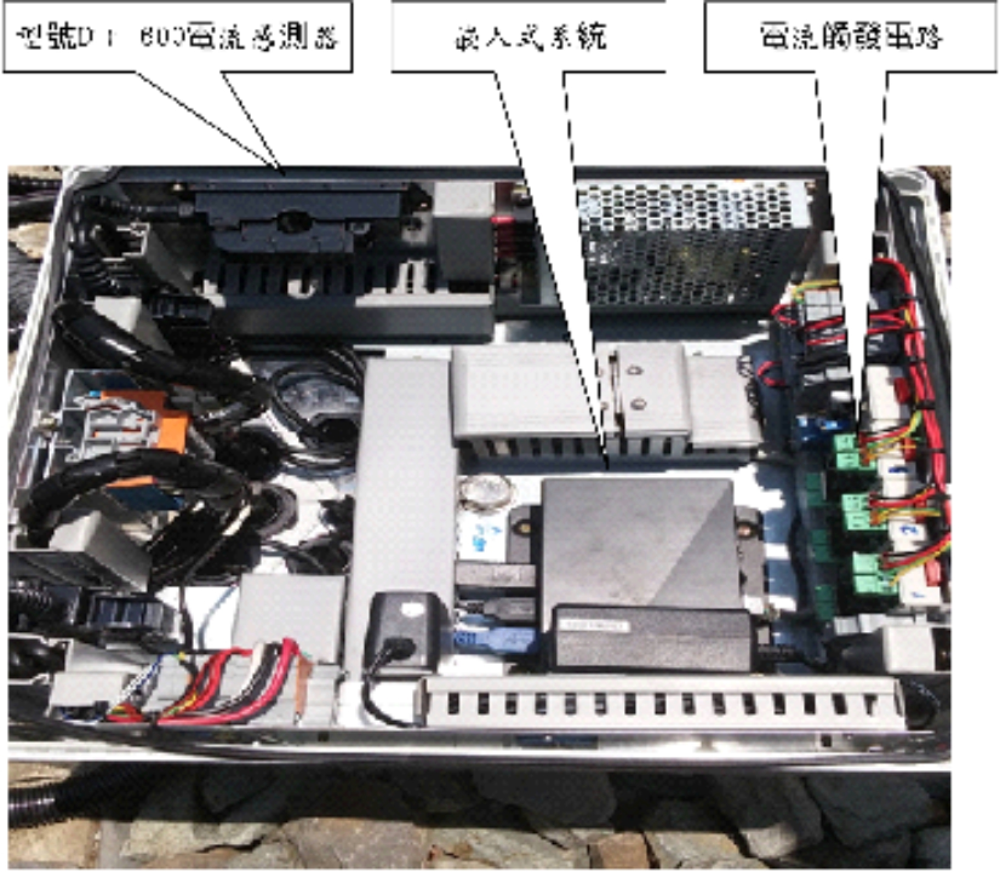
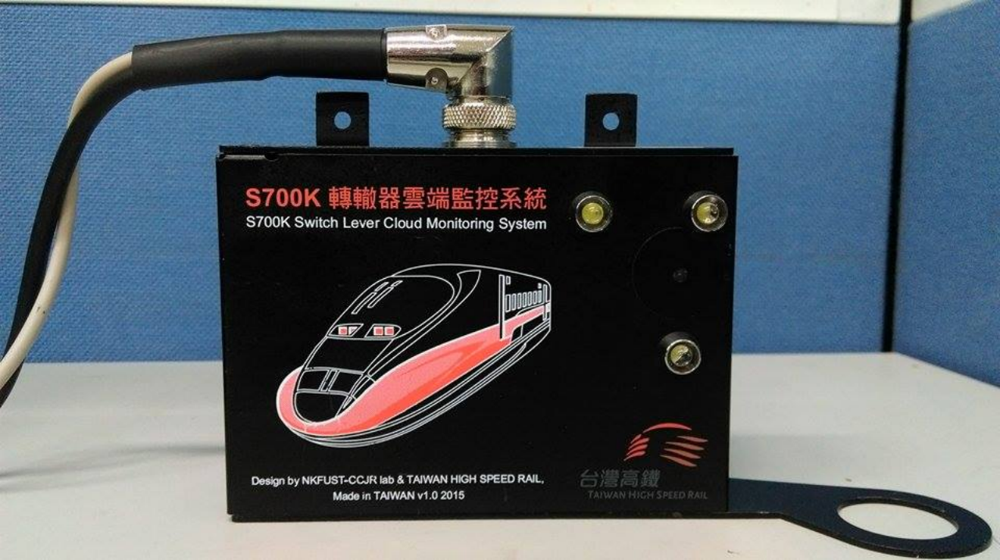
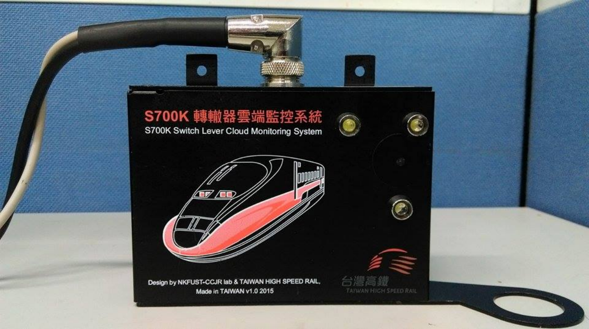
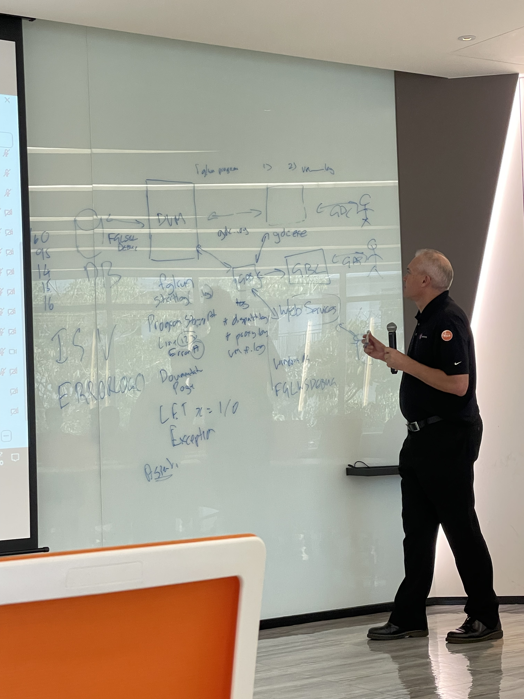
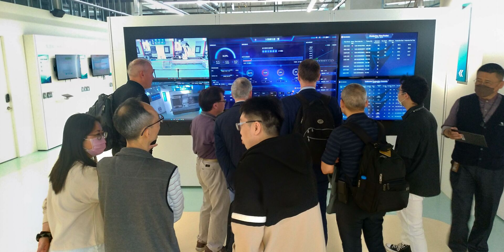
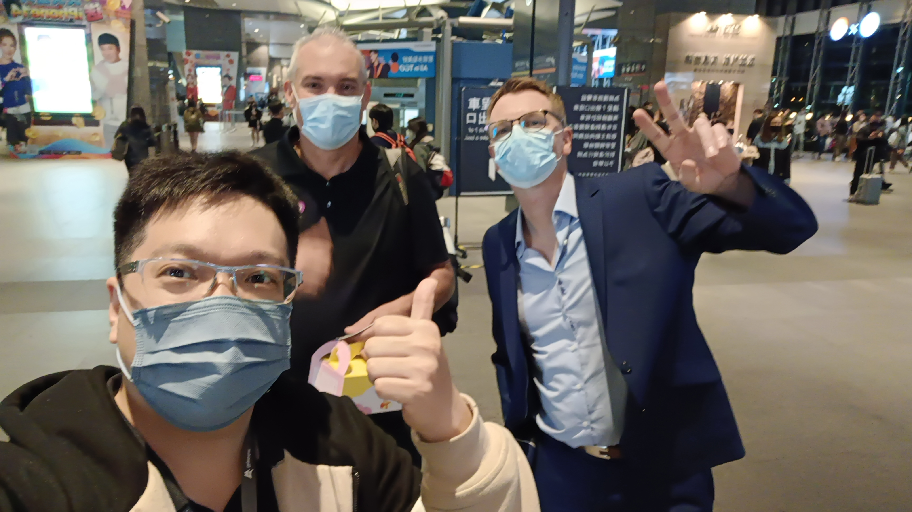
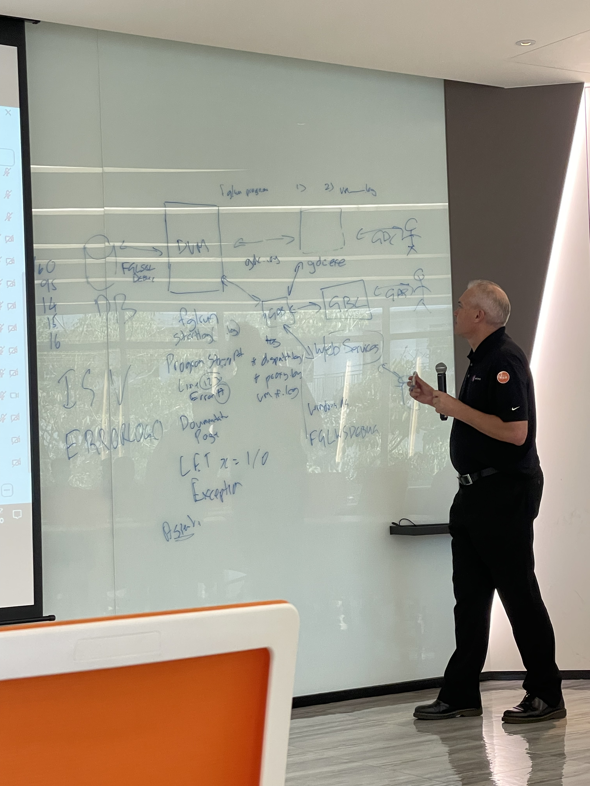
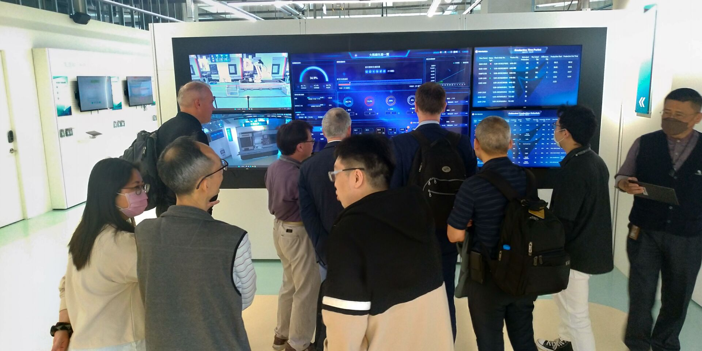
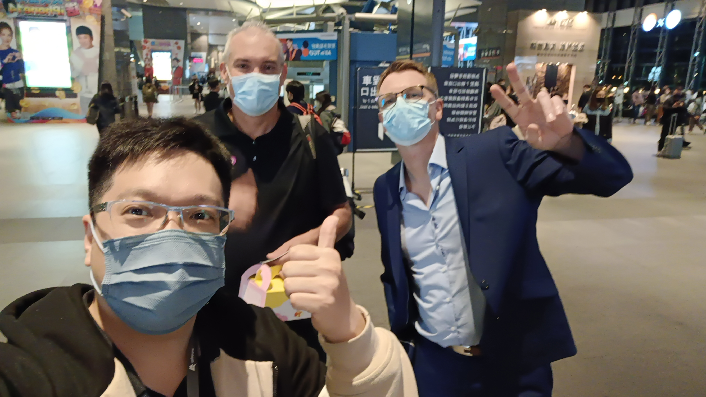

Profile
I come from a Christian family and am the eldest of four siblings. Growing up, I developed strong leadership, teamwork, and problem-solving skills. I am passionate about learning new technologies and excel in working under pressure to ensure project success.
With effective communication and coordination skills, I bridge cross-functional teams to facilitate technical collaboration and issue resolution. Additionally, I take an active role in leading teams, setting project goals, and implementing strategies to maximize performance and efficiency.
Currently, I am a software engineer at Digiwin. I have a passion for programming and excel in communication and teamwork. As a team leader, I’ve successfully managed diverse projects.
Work Experience
Digiwin Software Co., Ltd. (2021 - Present)
Software Engineer - Developing system and database tools:
- ERP backup tool ensuring data integrity.
- Maintaining ERP developer servers (Apache & FastCGI).
- Managing vSphere and host resource distribution.
- Conducting performance testing for Kingbase and MogDB.
- Participated in migrating T100 ERP to China’s database solutions.
- Developed a system for managing software licenses.
- Participating MogDB OCI developer and promote efficiency SQL on MogDB and Kingbase
- Contactor of 4js RD department, responsible for the development of the 4js solution.
- ERP Optimization: Improved T100 & GP compatibility, optimized RHEL parameters, and enhanced large-scale system stability.
- System Architecture & Maintenance: Managed VMware hosts, Linux/Windows servers, and oversaw hardware installation & maintenance.
- Database Management: Maintained Oracle databases, conducted performance testing & optimization.
- Database Migration & Cost Reduction: Participated in Kingbase & MogDB ERP migration, reducing procurement costs by 20-30%.
- Historical Data Segmentation: Migrated 10-20 years of data, improving query performance and reducing backup time by 30%.
- License Management System Enhancement: Strengthened license security, ensuring accurate user count tracking and reducing unauthorized access risks.
- 2024 Best Technical Development Award: Recognized for contributions to technical development and system improvements.
The Church in Taipei Information Center (2019 - 2021)
Software Engineer - Developed backend & frontend systems:
- Developed backend of Saint Management System (Node.js, Egg.js).
- Frontend development using JavaScript & React.
- Migrating on-premise database to AWS RDS.
- Transferring church website to AWS S3.
 

 


 




